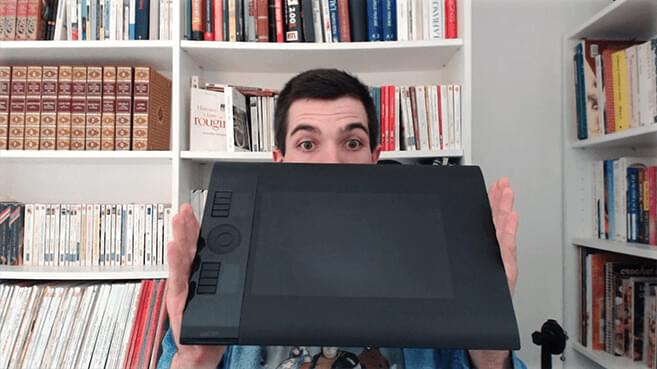
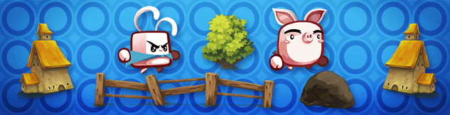
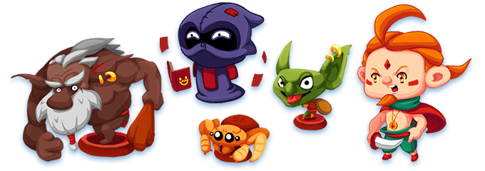

You came to the right place! Using Krita, a free and open source painting application, Game Art Quest will show you both essential concepts and concrete techniques professionals use on a daily basis. It is a training series in 3 volumes. The first one is completely free.
In this series, I will run you through the process of creating professional grade static assets for games. I will share my workflow and my productivity tricks. Not only that! I will show you how Krita is becoming a solid option for professional work.
Although we’ll use Krita, the concepts you will learn apply to any painting application or medium. To become a more efficient game artist, you have to sharpen your observation skills and explore drawing techniques. These are the same regardless of the tools you are using, and that’s what we’re going to see.
The series will also cover the unique constraints we game artists face in our work. As a game artist, you have to make assets with a target resolution and camera in mind. You have to carefully draw your alpha masks. More importantly, as a game artist, your art has to support the gameplay: it shapes the game experience.
If you don’t know Krita yet, check out my 19 YouTube tutorials dedicated to it! And click here to download the application. It’s available on Windows, Linux and Mac (port in progress).
Game Art Quest was funded on Kickstarter by 424 generous backers!
This page is a hub for all of the activity linked to the project. Here, you will find open source game assets, the free Krita training, as well as a frequently updated roadmap.

I’m Nathan Lovato, a game designer. I the run GDquest a Youtube education channel dedicated to game art and game design. Every week, I release a new tutorial. I have made dozens of tutorials already! You can find them all on that page.
I’m working hand in hand with the Krita developers. They review my work to ensure that you get the best Krita training possible!
Here’s a description of the 3 volumes of Game Art Quest.
This training will show you what Krita has to offer to 2d game artists. It covers the tools you need to know to work efficiently, as well as some workflow related tips. It is completely free, thanks to the Kickstarter backers! It will be available on both Udemy and Youtube.
Current progress

In this second training, we will take a closer look at the game creation pipeline from a game artist’s standpoint. We will create static assets for a side scrolling video game with a painterly art style, inspired by the work of VanillaWare (Odin Sphere, Muramasa) and Moon Studios (Ori and the Blind Forest).
Current progress

This 3rd volume is dedicated to isometric game art. In this series, we will expand on the first 2 volumes, explore new drawing techniques as well as the characteristics of isometric games.
Current progress
The Game Art Quest hub (this page)
The Krita training: pre-production
This roadmap will tell you in which order I’m producing Game Art Quest. I will adjust it over time, depending on the workload and my progress with the videos.
The plan is to start with the free Krita to training series 1st as it is a prerequisite for the other 2 volumes. Then, I will move on to volume 2 to provide the Kickstarter backers with premium content.
January 16 to February 15